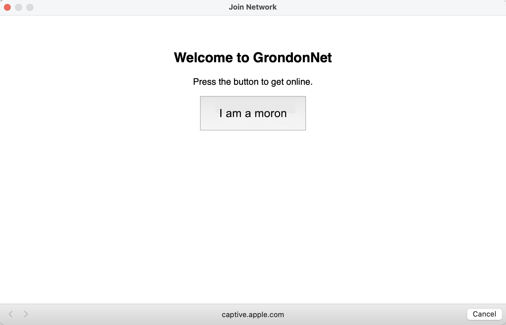

<html data-template-version="1.0">
    <head>
        <meta charset="UTF-8">
        <meta name="viewport" content="width=device-width, initial-scale=1.0">
        <link rel="shortcut icon" type="image/x-icon" href="/gorlog/static/favicon.ico">
        <link rel="stylesheet" href="/gorlog/static/gorlog.css">
        <script src="/gorlog/config.js"></script>
        <script src="/gorlog/static/gorlog.js"></script>
        <meta property="og:article:author" content="Gordon Kamer" />
        
        <!-- MODIFY THESE FOR EACH ENTRY -->
        <title>
            Creating a WiFi Captive Portal for Guests at My Apartment
        </title>
        <meta property="og:description"
            content="Networking is pretty complicated. Who knew?"
        />
        <meta property="og:article:published_time"
            content="2025-06-24"
        />
        <meta property="og:image" content="./captive-portal-image.jpg">

    </head>
    <body>
        <p>
            I thought it would be fun to make guests to my apartment agree to some embarrassing terms in order to use the WiFi.
            The project turned out to be one of the more complicated things I've done with a computer.
            I'd like to show you how you might do it yourself, discussing some of the finer points of networking on Linux along the way.
        </p>
        
        <p>
            The basic concept of the project is that I will use my Linux machine as an access point and then modify the firewall so that I can put a custom captive portal in front of it. 
            You access it as you might connect to hotel WiFi - through a captive portal that makes you agree to terms before getting online.
            We will do everything from scratch (or close to it). There are tools like nodogsplash or OpenWRT you might consider if you'd like a less hardcore experience.
        </p>
        <p>
            We'll talk about systemd, which starts many of the important processes on your machine when your computer boots up; how Unix machines (Mac and Linux) see and interact with network devices; how your computer is assigned an IP address; and other light topics.
        </p>
        
        <h4>Software Overview</h4>
        <p>
            There is a bunch of software that may or may not be pre-installed on your machine that will be involved in this project.
            There are alternatives, but judging from online fora, this is the most common stack for a project of this type:
        </p>
        <ul>
            <li><b>hostapd</b>, for broadcasting your WiFi access point</li>
            <li><b>dnsmasq</b>, for handling DNS and DHCP (more on this later)</li>
            <li><b>nftables</b> (installed with Linux), for managing your firewall</li>
            <li><b>NetworkManager</b>, for managing your regular internet connection (systemd-networkd is a more barebones alternative for servers)</li>
            <li>Your captive portal server, which you can make using your favorite web development tools</li>
        </ul>
        <p>
            For the captive portal itself, I will use Flask with gunicorn.
            If your Linux distribution is using systemd, which it probably is, you can check the status of each of these services using <code>systemctl status service-name</code>, replacing <code>service-name</code> with each of the above services (capitalization matters).
            I also set up the captive portal web server as a systemd service, which I will show you how to set up.
        </p>

        <h4>Hardware and System Prerequisites</h4>
        <p>
            A few weeks ago was the grand opening of the Santa Clara Microcenter.
            I walked out with a MinisForum UM760 Slim, which is a MiniPC that costs $250-350.
            An annoying feature is that they have Windows pre-installed, so I put an ISO file on a USB stick, wiped Windows, and installed Linux (Arch btw).
            Unfortunately, the WiFi card was not compatible with Linux, so I had to open up the computer with a screwdriver and put in a new one.
        </p>
        <p>
            I bought an Intel AX210 for the WiFi card, which has a critical feature for this project: it can function in "Access Point" (AP) mode.
            Less critically but conveniently, it can function in AP mode at the same time it's using WiFi normally.
        </p>
        <p>
            To confirm that you have a suitable WiFi card, you can use the iw tool, which is included with Linux (the w in iw can be thought of as "wireless").
            The command <code>iw list</code> will show information about your WiFi devices (cards). Your device might be named something like phy0, and iw will give a bunch of information about phy0 you don't care about - except for one thing, which is its "valid interface combinations."
            One of the lines for my device looks like this:
            <pre>#{ managed } <= 1, #{ AP, P2P-client, P2P-GO } <= 1, #{ P2P-device } <= 1,total <= 3, #channels <= 1</pre>
            This tells me that I can have, simultaneously, <= 1 managed connections (normal connections), <= 1 access points OR P2P-clients (bluetooth) OR P2P-GOs (another bluetooth thing), and <= 1 P2P-devices (yet another bluetooth thing).
            It also tells me that I can only use one "channel" in all, which will be a complication discussed later.
            In any case, because I see that I can have a managed connection as well as an access point, I know what I'm trying to do is possible.
            If you don't see "AP" anywhere, you're in trouble.
        </p>
        <p>
            Even if you do see "AP", it's possible your WiFi card doesn't support AP mode simultaneously with a managed connection. In that case, you can simply use your ethernet port instead of WiFi while your access point is running.
            That makes the process much simpler, actually, and you should ignore certain parts of this article. Going forward, however, I'm going to discuss only the case for my setup.
        </p>

        <h4>
            Primer on Systemd and Systemctl
        </h4>
        <p>
            Systemd is a program that is used by many Linux distributions to start your machine's basic services, like an SSH server, networking utilities, or your desktop's graphical interface.
            The "d" in systemd stands for "daemon," which is defined as a program you didn't launch in a shell. Daemons run in the background while you go off and do more important things.
            Systemd is run as the very first program on many Linux distributions and bootstraps all your other daemons, whether user-defined or built-in. An alternative to systemd is initd.
            Any program you want to run automatically when your machine first starts can be run using systemd.
        </p>
        <p>
            You can interact with systemd using systemctl (developers' putting ctl or cli at the end of their daemons' names for their command line interfaces is a common pattern).
            An informative command is <code>systemctl status</code>. For example, a service we will be using later is called dnsmasq.
            We can check its status with <code>systemctl status dnsmasq</code>. If it's active, that means it's running right now. If it's enabled, we know that it will try to run when the computer starts up.
            Other relevant commands are <code>systemctl enable service-name</code>, <code>systemctl disable service-name</code>, and <code>systemctl restart service-name</code>, replacing service-name with the service you're interested in.
        </p>

        <h4>
            Network Interfaces and How to Make One
        </h4>
        <p>
            A networking device connected to your computer is made accessible to programs through a network "interface."
            You might have one interface for your WiFi, one for each ethernet port, and one for "loopback."
            Typically, one IP address is assigned for each interface (your computer can have multiple IP addresses).
            Typical names for these interfaces, which are likely already created on your machine, are "eth0" for your first ethernet port, "wlan0" for your WiFi (wireless LAN), and "lo" for loopback (the special interface for your 127.0.0.1 IP).
            In other contexts, you may recall that running a server at "0.0.0.0:80" is different from running it at "127.0.0.1:80" because "0.0.0.0" references all interfaces.
            You can check your network interfaces using <code>ip link show</code> (ip is a utility included in Linux for managing networking in addition to iw).
            For example, here is what I got when running <code>ip link show</code> before starting this project:
            <pre>
1: lo: <LOOPBACK,UP,LOWER_UP> mtu 65536 qdisc noqueue state UNKNOWN mode DEFAULT group default qlen 1000
    link/loopback 00:00:00:00:00:00 brd 00:00:00:00:00:00
2: enp2s0: <NO-CARRIER,BROADCAST,MULTICAST,UP> mtu 1500 qdisc fq_codel state DOWN mode DEFAULT group default qlen 1000
    link/ether 58:47:ca:7e:42:06 brd ff:ff:ff:ff:ff:ff
    altname enx5847ca7e4206
3: wlp3s0: <BROADCAST,MULTICAST,UP,LOWER_UP> mtu 1500 qdisc noqueue state UP mode DORMANT group default qlen 1000
    link/ether c8:58:b3:e3:f9:22 brd ff:ff:ff:ff:ff:ff
    altname wlxc858b3e3f922</pre>
            Note that my interface names are slightly different from the most common ones: wlp3s0 is for WiFi and enp2s0 is for ethernet in my case.
            You should make sure you know whether your managed WiFi interface is wlp3s0 or wlan0 and replace wlp3s0 with wlan0 as appropriate throughout this project.
        </p>
        <p>
            The relationship between networking devices and interfaces is not strictly one-to-one.
            Devices may be associated with multiple interfaces. Interfaces are associated with IPs.
            The first thing we have to do for this project is create a second interface for our WiFi card that acts as our access point, which will have a new IP.
        </p>
        <p>
            We have to create this interface every time our computer starts up. Thus, we will create a systemd service.
            You put user-defined systemd services in /etc/systemd/system. I created /etc/systemd/system/create-virtual-interface.service with the following content:
            <pre>
[Unit]
Description=Create virtual wireless interface
Requires=sys-subsystem-net-devices-wlp3s0.device
After=network.target
After=sys-subsystem-net-devices-wlp3s0.device
[Service]
Type=oneshot
ExecStart=/usr/bin/iw dev wlp3s0 interface add ap0 type __ap addr 02:00:00:00:01:00
ExecStartPost=/usr/bin/ip addr add 192.168.12.1/24 dev ap0
ExecStartPost=/usr/bin/ip link set ap0 up
RemainAfterExit=yes
[Install]
WantedBy=multi-user.target</pre>

        Note the "ExecStart" and "ExecStartPost" lines. Those are the commands we ask systemd to run. The first uses iw to create an interface based on the same device wlp3s0 is using with the name ap0.
        We set the type of the interface to be "__ap", which means that it's being used as an access point. The "addr" is actually the MAC address, which here is fake but valid.
        It's important to give the interface a MAC address lest it use the same one that wlp3s0 uses, which can lead to the two interfaces' stepping on each other's toes.
        </p>
        <p>
            The next two commands use ip. First, we assign a local IP address 192.168.12.1 to our interface.
            The /24 is a "subnet mask", which specifies that addresses 192.168.0.0 through 192.168.255.255 are "on-link", the IPs that will be associated with devices our new network.
            <a href="https://datatracker.ietf.org/doc/html/rfc1918">RFC 1918</a> defines the standard which says that 192.168.0.0 to 192.168.255.255 are all local IPs.
            It also permits 10.0.0.0/8 and 172.16.0.0/12. If your regular WiFi uses 192.168 prefixed IPs, choose one of the alternate ranges.
            You can check your existing IP address using <code>ip addr show</code> and looking for the "inet" entry.
            The next command brings the interface up.
        </p>
        
        <h4>Advertising Your Network and Network Manager</h4>
        <p>
            We will now set up hostapd, which will make our network visible to other machines.
            If you have an iPhone, you use built-in software that does the same thing when you make your phone a hotspot.
        </p>
        <p>
            Once you've checked that hostapd is installed and enabled, we can modify its configuration file available at /etc/hostapd/hostapd.conf.
            Most configuration files end in .conf, and most of them live in /etc ("edit to configure"). Here is what my configuration looks like:
        </p>
        <pre>
interface=ap0
ssid=GrondonNet
hw_mode=g
channel=6

ieee80211n=1
wmm_enabled=1

#Authentication
#auth_algs=1
#wpa=2
#wpa_key_mgmt=WPA-PSK
#rsn_pairwise=CCMP
#wpa_passphrase=MyOptionalPassword</pre>
        <p>
            I have commented out the section that would give this network a password.
            The network I'm hosting uses ap0, which is what we called the network interface we created.
            The SSID is the name people will see when they select our WiFi network.
            The hw_mode=g and channel=6 parts specify that we're using 2.4GHz.
        </p>
        <p>
            Most home routers can host WiFi at 2.4GHz and 5GHz. You sometimes will see separate networks available for each, though you may see only one (your computer will negotiate with the router for one of the bands).
            5GHz is faster and generally recommended.
            However, in this case, I happen to know that the Intel AX210 does not support AP mode at 5GHz.
            I also know from before that my card can support AP and managed at the same time only on a single channel.
            Thus, I must use 2.4GHz for both my AP and normal WiFi connection, which I will have to ensure is at 2.4GHz.
            Note also that I need to match the channel (6) to the same channel my regular WiFi is using. Generally, 1, 6, or 11 is used for 2.4GHz, so we'll have to check.
            Annoyingly, the exact channel can also change over time, which means that you may have to reconfigure this value repeatedly (please tell me if you have a solution here).
        </p>
        <p>
            My normal WiFi is being managed with NetworkManager. NetworkManager is used for desktops while systemd-networkd is the alternative for servers.
            You can check which if any is running using systemctl.
            If you need to disable systemd-networkd to prevent it from colliding with NetworkManager (which I had to do), you'll need to <code>systemctl disable systemd-networkd</code>.
            If you are told you need to disable more services to properly disable systemd-networkd, ask for the right command from ChatGPT.
        </p>
        <p>
            Now I should make sure that NetworkManager is connecting to my WiFi at 2.4GHz.
            NetworkManager saves connections in /etc/NetworkManager/system-connections. You should find a file with the same name as your WiFi.
            You should modify the [wifi] section so that its band is "bg", which corresponds to 2.4GHz.
        </p>
        <pre>[wifi]
band=bg
mode=infrastructure
ssid=Dwarfism 2.0</pre>
        <p>
            In order to access the system-connections directory, you may need root access. You can use <code>sudo -s</code> to start using your shell as root and then cd inside. Running <code>sudo cd</code> doesn't work.
        </p>
        <p>
            Next, we can confirm that the correct 2.4GHz channel is actually 6. We will use the NetworkManager command line interface, nmcli.
            Run <code>nmcli device wifi list</code> to display all of the available WiFi connections within range of your machine.
            It will show the channel for each. 157 is the channel for 5GHz. Look for one whose channel is 1, 6, or 11 and note that value. Go back to your hostapd.conf if needed and update the channel.
        </p>
        <p>
            Lastly, we want NetworkManager to stay out of the way of our access point (it should only be managing the interface wlp3s0).
            We can add a file to /etc/NetworkManager/conf.d called unmanaged.conf with the following content:
            <pre>[keyfile]
unmanaged-devices=interface-name:ap0</pre>
            Later on, if you run <code>nmcli</code> (no arguments), you should see that ap0 is "unmanaged" while your wlp3s0 (or wlan0) is "connected."
        </p>

        <h4>
            Giving Clients IPs and DNS
        </h4>
        <p>
            The Dynamic Host Configuration Protocol (DHCP) specifies how a router (or our WiFi access point) assigns local IP addresses to client machines.
            For example, our host machine's ap0 interface has the IP 192.168.12.1, and it will assign clients IP addresses like 192.168.1.125 and so on.
            The program that handles this is dnsmasq, another service run using systemd. We will also let it take care of DNS.
        </p>
        <p>
            Once you've verified that dnsmasq is installed and enabled, you can find its configuration at /etc/dnsmasq.conf. A configuration that worked for me is the following:
        </p>
        <pre>interface=ap0
bind-interfaces
listen-address=192.168.12.1

dhcp-authoritative
dhcp-range=192.168.12.50,192.168.12.150,12h

dhcp-option=3,192.168.12.1
dhcp-option=6,192.168.12.1</pre>

        <p>
            We've already discussed most of what that configuration is doing. It's listening only on the interface ap0, it's listening at 192.168.12.1 for new connections, and it's giving out IPs in the specified range.
            The bottom two options tell client machines to set the given IP as its default router (option 3) and to use the router for DNS (option 6).
            Some of these options may be redundant depending on your setup.
        </p>
        <p>
            You should check to see if you're also running systemd-resolved, a common local DNS server. If you are, there's a good chance dnsmasq and systemd-resolved have a conflict on port 53.
        </p>
        <p>
            Here is some background on DNS: Whenever your computer needs to resolve the IP of a domain name (do DNS lookup), it will ask a process bound to port 53.
            That process will typically look at /etc/resolv.conf for a list of nameservers it should refer to.
            One such namserver has the IP 1.1.1.1, which is run by Cloudflare.
            The nameservers your machine will talk to are run by big-shot cloud providers like Google or Cloudflare.
            Their IPs are usually special because they paid a lot of money for them (1.1.1.1, 8.8.8.8, etc.).
            It is sometimes useful to run <code>ping 1.1.1.1</code>.
            We will have complete control of the DNS lookup through dnsmasq and our firewall (more later). It will be key to showing our captive portal.
        </p>
        <p>
            If you have a conflict at port 53 from systemd-resolved, you can add the following to the systemd-resolved configuration file located at /etc/systemd/resolved.conf:
            <pre>[Resolve]
DNSStubListener=no</pre>
            You'll know this is working if dnsmasq can start without errors (otherwise, it will state that it can't bind to port 53).
        </p>
        
        <h4>
            Firewall and Port Forwarding
        </h4>
        <p>
            Now we will need a suitable firewall to route traffic correctly. The newer Linux distributions generally use nftables, which you can manage using systemd (some distributions or older kernels might use iptables).
            The nftables configuration is located at /etc/nftables.conf. We will write one without the captive portal and modify it later to insert a captive portal.
            <pre>
#!/usr/sbin/nft -f

flush ruleset

table inet filter {

    chain input {
        type filter hook input priority 0; policy drop;

        ct state { established, related }   accept
        ct state invalid                    drop
        iifname "lo"                        accept

        ip   protocol icmp      accept
        ip6  nexthdr  icmpv6    accept

        tcp dport 22             accept    # SSH

        iifname "ap0" udp dport 67  accept  # DHCP
        iifname "ap0" udp dport 53  accept  # DNS-UDP
        iifname "ap0" tcp dport 53  accept  # DNS-TCP
    }

    chain forward {
        type filter hook forward priority 0; policy drop;

        # established flows in *either* direction
        ct state { established, related }                  accept

        # new connections: LAN → WAN only
        iifname "ap0" oifname "wlp3s0"                     accept
        # (Anything else is dropped by the chain policy)
    }

    chain output { type filter hook output priority 0; policy accept; }
}

table nat {
    chain prerouting {
        type nat hook prerouting priority dstnat;
        iif wlp3s0 tcp dport {22, 80} dnat to 192.168.12.1
    }
    chain postrouting {
        type nat hook postrouting priority srcnat;
        oif wlp3s0 masquerade
    }
}</pre>
        This firewall worked for me, though there are many options here.
        The syntax for nftables can be very complicated, and I don't claim to understand all the nuances.
        Nevertheless, the most important aspects here are (1) permitting DHCP traffic through port 67 on ap0, (2) permitting DNS traffic through port 53, and (3) implementing network address translation (masquerading) for packets to come in on ap0 and go out on wlp3s0.
        What happen is that your client machines will make a request through ap0 for a particular IP address and port.
        The machine needs to take that request, use wlp3s0 (our normal WiFi) to fulfill it, and know to send it back to the client over ap0.
        Recall that ap0 is not how we reach the broader internet; our machine can only speak to it through wlp3s0.
        The broader internet doesn't know about our clients on ap0.
        We need to rewrite the source IP address from the client to be our publicly accessible address on wlp3s0 (masquerading) so that packets sent back to us actually make it.
        Then we forward the response back to our client.
        </p>
        <p>
            The final step here is to enable port forwarding at the kernel level by configuring sysctl.
            Sysctl is configured from the /etc/sysctl.d directory. Add a file called sysctl.conf to that directory with the following line:
            <pre>net.ipv4.ip_forward = 1</pre>
        </p>
    
    <h4>
        Checkpoint
    </h4>
    <p>
        At this stage, you should be able to reboot your computer, which will apply all of our new configuration settings and start the correct daemons.
        You should be able to select your new network from another machine within range of your host computer.
        Once connected, you should have full internet access from the client machine.
        Before doing so, you should confirm that after reboot:
        <ul>
            <li>The relevant daemons started without error (dnsmasq, hostapd, NetworkManager).</li>
            <li>Your nft rules were applied without error. Try <code>nft list ruleset</code>, which should list what you put in nftables.conf. If you don't see your new configuration, try restarting nftables using <code>systemctl restart nftables</code> and peeking at any errors using journalctl.</li>
            <li>Your host machine has internet access on the correct WiFi band.</li>
        </ul>
        If you're having trouble, take a look at the <a href="#troubleshooting">troubleshooting</a> section of this article.
    </p>

    <h4>
        Updating Your Firewall to Implement a Captive Portal
    </h4>
    <p>
        Once you've confirmed that your machine can be used as an access point, we can try implementing the captive portal.
        Our goal is to deny internet access until a user accepts some terms and conditions.
        When a user connects to WiFi, devices will typically send a probe to a pre-determined URL, like https://captive.apple.com.
        The device knows what the content returned from that page should be.
        If the response deviates from what the device expects, the device will detect the captive portal and show it to the user.
        We can change /etc/nftables.conf again to redirect all traffic to our captive portal, which we can run at port 80 on our host machine.
        A suitable configuration might look like this:
    </p>
<pre>
#!/usr/sbin/nft -f

flush ruleset

table inet filter {
    # ---- unauthenticated clients go here ----
    set allowed_v4 {
        type ipv4_addr;        # authorised hosts
        timeout 4h;            # drop entry after 4 h
        comment "Auto-filled by portal"
    }

    set allowed_macs {
        type ether_addr;
        timeout 4h;
        comment "Auto-filled by portal - MAC"
    }

    chain input {
        type filter hook input priority 0; policy drop;

        ct state {established, related}     accept
        ct state invalid                    drop
        iifname "lo"                        accept

        # basic ICMP
        ip  protocol icmp        accept
        ip6 nexthdr  icmpv6      accept

        # mgmt
        tcp dport 22             accept      # SSH

        # WLAN services
        iifname "ap0" udp dport 67  accept   # DHCP
        iifname "ap0" tcp dport 53  accept   # DNS-TCP
        iifname "ap0" udp dport 53  accept   # DNS-UDP
        iifname "ap0" tcp dport 80  accept   # captive-portal HTTP
    }

    chain forward {
        type filter hook forward priority 0; policy drop;

        # already-established flows
        ct state {established, related}           accept

        # authorised WAN → LAN replies handled by conntrack above
        iif "ap0" ether saddr @allowed_macs oif "wlp3s0"      accept
        iif "ap0" ip saddr @allowed_v4  oif "wlp3s0"          accept

    }

    # ---- captive redirect ----
    chain portal_nat {
        type nat hook prerouting priority dstnat; policy accept;

        iif "ap0" ether saddr @allowed_macs 	return
        iif "ap0" ip	saddr @allowed_v4	    return

        # redirect *all* HTTP from Wi-Fi clients to local :80
        iif "ap0" tcp dport 80 redirect to :80          comment "portal"

        # (optional) drop or reject HTTPS to avoid endless TLS errors
        iif "ap0" tcp dport 443 reject with tcp reset
        iif "ap0" udp dport 443 reject
    }

    chain portal_post {
        type nat hook postrouting priority srcnat; policy accept;
        oif "wlp3s0" masquerade
    }
}</pre>
    <p>
        There are some important changes from before. First of all, we're using a feature of nftables to keep a set of allowed IP addresses and MAC addresses. We can use either to whitelist clients who accept the terms.
        We move some of our previous logic into the filter table so that we can reference those allowed addresses everywhere.
        The general approach is to redirect all non-whitelisted HTTP traffic to our portal running locally on port 80.
        Whitelisted traffic will flow through wlp3s0 normally as before.
    </p>
    <p>
        You should know that port 80 is the port for HTTP traffic, and port 443 is the port for HTTPS (secure) traffic.
        While most browsers automatically request port 443 for security reasons, properly handling HTTPS traffic may require additional setup.
        Instead, we reject traffic from port 443 with tcp reset, which allows the client to tell immediately that traffic to 443 is blocked.
        Without the line <code>iif "ap0" tcp dport 443 reject with tcp reset</code>, I find that Apple devices are unable to detect the captive portal because their HTTPS probe request hangs.
        I suspect that this is a common issue on many planes' networks, which have buggy captive portals.
    </p>

    <h4>
        The Captive Portal Web Server
    </h4>
    <p>
        A captive portal is just a special website that runs at port 80 on our host machine.
        You can use whatever technologies you'd like (Nginx, Node, Flask, Django, Waitress, etc.), but it must be able to add the client's IP or MAC address to the the allowed list for nftables.
        I wrote a Flask app.py that looks like this:
<pre>
#!/usr/bin/env python3
import ipaddress
import os
import re
import subprocess
from pathlib import Path
from flask import Flask, request, redirect, Response, render_template

AP_IFACE      = "ap0"
NFT_FAMILY    = "inet"
NFT_TABLE     = "filter"
SET_IPv4      = "allowed_v4"   # must match nftables.conf
SET_MAC       = "allowed_macs" # must match nftables.conf
ENTRY_TTL     = "4h"           # keep-alive in nft set

app = Flask(__name__, static_url_path="", static_folder="static")

MAC_RE = re.compile(r"(?P &lt;ip>\d+\.\d+\.\d+\.\d+)\s+dev\s+\S+\s+lladdr\s+(?P &lt;mac>(?:[0-9a-f]{2}:){5}[0-9a-f]{2})",
                    re.IGNORECASE)

def nft_add(set_name: str, element: str) -> None:
    """
    Idempotently add an element to an nftables set.
    """
    cmd = [
        "nft", "add", "element",
        NFT_FAMILY, NFT_TABLE, set_name,
        f"{{ {element} timeout {ENTRY_TTL} }}"
    ]
    # ignore 'file exists' errors
    subprocess.run(cmd, check=False)

    
def ip_from_request() -> str:
    """
    Extract IPv4 from request headers (works with or without reverse proxy).
    """
    return request.headers.get("X-Real-IP", request.remote_addr or "")


def mac_for_ip(ip: str) -> str | None:
    """
    Look up the L2 address in the kernel neighbour table.
    Returns None if unresolved.
    """
    try:
        out = subprocess.check_output(
            ["ip", "neigh", "show", ip, "dev", AP_IFACE],
            text=True,
            timeout=1.0,
        )
    except subprocess.CalledProcessError:
        return None

    m = MAC_RE.search(out)
    return m.group("mac") if m else None


@app.route("/generate_204")            # Android / ChromeOS
@app.route("/hotspot-detect.html")     # Apple / iOS / macOS
@app.route("/connecttest.txt")         # Windows pre-10
@app.route("/ncsi.txt")                # Windows 10+
def probes():
    return redirect("/", code=302)

@app.get("/")
@app.get("/login")  # Android polls GET /login before displaying captive-UI
def landing():
    return render_template("landing.html")

@app.post("/login")
def login():
    ip = ip_from_request()

    # Basic sanity check
    try:
        ipaddress.IPv4Address(ip)
    except ipaddress.AddressValueError:
        return "Invalid IP", 400

    # 1) Try to learn MAC; 2) fall back to IP if necessary
    mac = mac_for_ip(ip)
    if mac:
        nft_add(SET_MAC, mac.lower())
    else:
        nft_add(SET_IPv4, ip)

    return render_template("success.html")

if __name__ == "__main__":
    app.run(host="0.0.0.0", port=80)</pre>

    I will leave the /templates html files as an exercise to the reader.
    </p>
    <p>
        The canonical location for this sort of thing is in /opt, so you might put your app.py inside /opt/captive-portal.
        Given that location, and having installed the relevant packages (Flask, gunicorn, etc.), we can write another systemd service in /etc/systemd/system called captive-portal.service:
<pre>
[Unit]
Description=Captive portal Flask app
After=network.target nftables.service dnsmasq.service
Requires=nftables.service

[Service]
WorkingDirectory=/opt/captive-portal
ExecStart=/usr/bin/gunicorn -b 0.0.0.0:80 app:app
User=root
Restart=on-failure
AmbientCapabilities=CAP_NET_BIND_SERVICE CAP_NET_ADMIN

[Install]
WantedBy=multi-user.target</pre>

    This service starts our captive portal server using gunicorn on boot, and it will run our app on all interfaces at port 80.
    You can check to make sure that it's running when you start/enable the service (try <code>systemctl enable --now captive-portal</code>) by going to your browser and typing http://localhost:80.
    A problem I noticed is that sometimes the service will fail on reboot due to "dependency." I would be open to suggestions for fixing that.
    </p>

    <h4>
        Recap
    </h4>
    <p>
        At this point, you should be able to reboot, connect to your WiFi, and see a captive portal pop up. You should be able to access the internet on the client device after triggering /login on your captive portal.
    </p>
    <p>
        Here's what we did:
        <ul>
            <li>Configured hostapd using /etc/hostapd/hostapd.conf to set our WiFi name and optional password</li>
            <li>Configured dnsmasq using /etc/dnsmasq.conf so that clients can properly lease an IP address</li>
            <li>Put two services in /etc/systemd/system, one that creates the ap0 network interface and another that starts the captive portal server</li>
            <li>Ensured that our regular WiFi connects on the 2.4GHz band by inspecting /etc/NetworkManager/system-connections</li>
            <li>Enabled port forwarding in /etc/sysctl.d/sysctl.conf</li>
            <li>Removed a conflict with systemd-resolved by modifying /etc/systemd/resolved.conf</li>
            <li>Wrote a captive portal in /opt/captive-portal</li>
            <li>Modified our firewall using /etc/nftables.conf to do masquerading and direct users to the captive portal</li>
        </ul>
        While I have a working setup, I know that there's always more to do. Here are some next steps I might take:
        <ul>
            <li>Understand fully the implications of timeouts we placed in different locations on our connections</li>
            <li>Remove redundant or unnecessary configurations, like in nftables.conf and dnsmasq.conf</li>
            <li>Use only the MAC address consistently for our device allowed list</li>
            <li>Improve consistency on startup so that our nftables rules are always loaded, the correct 2.4GHz channel is always used, and our captive portal never fails to start</li>
            <li>Test Android and Windows client devices</li>
        </ul>
        You will doubtlessly need to troubleshoot. The following section details what tools and approaches you might use.
    </p>

    <h4 id="troubleshooting">Troubleshooting</h3>
    <p>
        Here are some tips to help you troubleshoot:
        <ul>
            <li>If you can't see the WiFi as an option at all, hostapd is likely to blame.</li>
            <li>Use <code>systemctl status service-name</code> to check that a service is active and enabled. Use <code>systemctl restart service-name</code> after changing any configuration.</li>
            <li>If a service fails to start or is giving you trouble, you can view more information using journalctl. The relevant command is <code>journalctl -u service-name --no-page</code> (note that by default, journalctl will silently truncate output).</li>
            <li>After connecting from a client, check your client's ip using <code>ifconfig</code> on Mac and looking for the inet entry under en0. If it's not an IP within the range you set with dnsmasq, or you see no inet entry at all, dnsmasq is failing to assign IPs properly.</li>
            <li>Use ping and curl from the client machine to check the status of your connection. Use curl with http or https as needed. You'll be able to see the resolved host IP as well as the response content, which you hope would be your captive portal's HTML if you're using curl before accepting to terms.</li>
            <li>Try visiting http://neverssl.com in an incognito browser if the captive portal isn't popping up. This avoids HTTPS, which your browser will favor by default. This is also a good tip if you can't get a portal to pop up in an airplane or hotel.</li>
            <li>Make sure your host machine has normal internet connectivity while the access point is running.</li>
            <li>Use nmcli to check that ap0 is listed but unmanaged and your regular WiFi is connected.</li>
            <li>Use <code>iw dev</code> to list your wireless network interfaces, which should include ap0.</li>
            <li>If you don't have an internet connection on the host, use <code>nmcli device wifi list</code> to check the channel your router is using for 2.4GHz connections. Ensure that the channel matches what you've configured.</li>
            <li>Another method to debug internet connectivity on the host is to check the status of NetworkManager and wpa_supplicant (NetworkManager will spawn wpa_supplicant to help with connecting to WiFi).</li>
            <li>For command line tools provided by Linux, you can use <code>man</code> (like <code>man iw</code>) to view manual pages that explain how to use the tool.</li>
            <li>If you're stuck looking at some text in the terminal, you might be in vi or vim. Type <code>:q</code> to exit.</li>
            <li>Netizens sometimes report that <code>iw dev wlp3s0 set power_save off</code> helps if their network card's power saving mode is interfering with the access point.</li>
            <li>One powerful tool to inspect traffic on your network is tcpdump. I would recommend copying the output of tcpdump into ChatGPT and asking it what's going on on your network. It can help diagnose what traffic is failing, especially if it's an HTTPS (port 443) related issue.</li>
        </ul>
    </p>
    </body>
</html>
